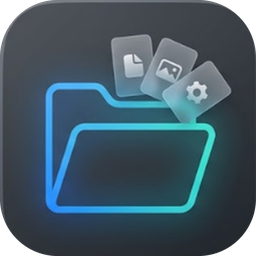

📌
Pin as many as you like
Every folder becomes its own real taskbar button with its own coloured icon. No background clutter, no extra bars.

Foldy DownloadPin any folder. Click it. Its contents spring out above the button along a smooth arc, just like the macOS Dock, only on Windows.
Windows 10 & 11 · free · open source · a single file
↑ Live demo: click a folder, hover over the items, scroll the fan.
What it does
Every folder becomes its own real taskbar button with its own coloured icon. No background clutter, no extra bars.
Foldy remembers where you clicked and asks Windows for that button's real position, so the fan lands right on top of it, even if you flick the mouse away.
Items fan out one after another with a little overshoot, and fold back the same way. Runs at your display's full refresh rate.
Icons magnify under your pointer and gently push their neighbours aside, so nothing ever overlaps.
Big folders scroll with momentum and a soft rubber-band at both ends, with items fading in and out at the edges.
A tiny launcher starts in about 100 ms. Icons and labels are pre-loaded. No network, no telemetry.
Try it
This is the real fan layout and physics, ported to the browser. Click a folder, then drag the sliders.
How it works
Pick a folder and Foldy creates a shortcut in Documents\Foldy with its own coloured icon and its own taskbar identity, then pins it for you. Each folder is a separate button.
The button runs a tiny launcher that starts in about 100 ms and passes your click to the resident app through a named pipe. It never unpacks anything.
Foldy recorded where the mouse button was released at that instant, so it doesn't matter where the pointer is now. It asks Windows (UI Automation) for that button's exact rectangle and reads the taskbar's real size. Scale, taskbar size and auto-hide are all handled.
A small click-through overlay draws the items along an arc with springs, magnification and kinetic scrolling. Click an item to open it; click anywhere else, or press Esc, to fold it away.
Install & uninstall
Run Foldy.exe once: a window shows each step while it installs. Removing it is just as clean.
Press and hold the button. When the ring closes, the uninstall begins. Let go early and it unwinds.
This is only a demo: nothing on your computer changes.
Good to know
Windows 10 or 11 (64-bit) with the taskbar at the bottom of your main screen. Normal and auto-hide taskbars both work, at any display scale.
No. Foldy makes no network connections, has no telemetry and no account. Everything stays on your PC.
Foldy is a new, unsigned program, so SmartScreen is cautious about it. Click More info, then Run anyway. The full source code is on GitHub if you want to check it or build it yourself.
No. It only reads folder listings to draw the fan. Uninstalling removes Foldy's own shortcuts, settings and program files and never anything of yours.
Yes: density, animation speed, glass opacity, magnification, arc curve, number of items, sorting and more, each with its own reset button.
Download the installer. It sets everything up for you and takes a few seconds.
Download Foldy.exeWindows 10 & 11 · free · MIT licensed · all releases · source code